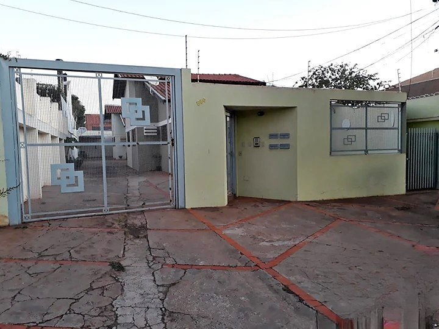
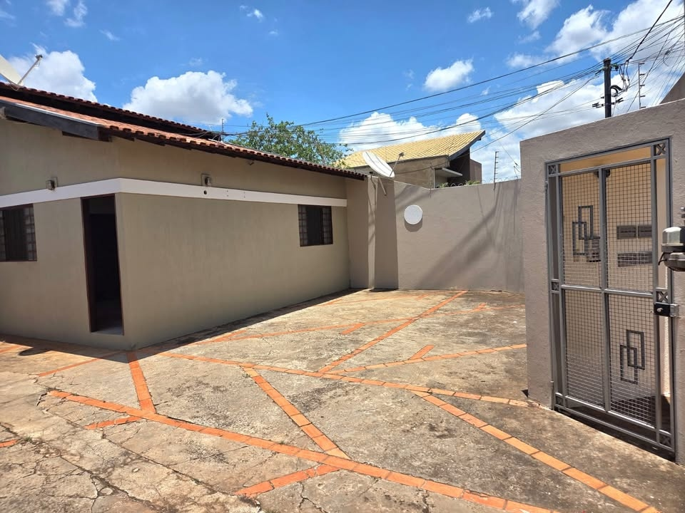
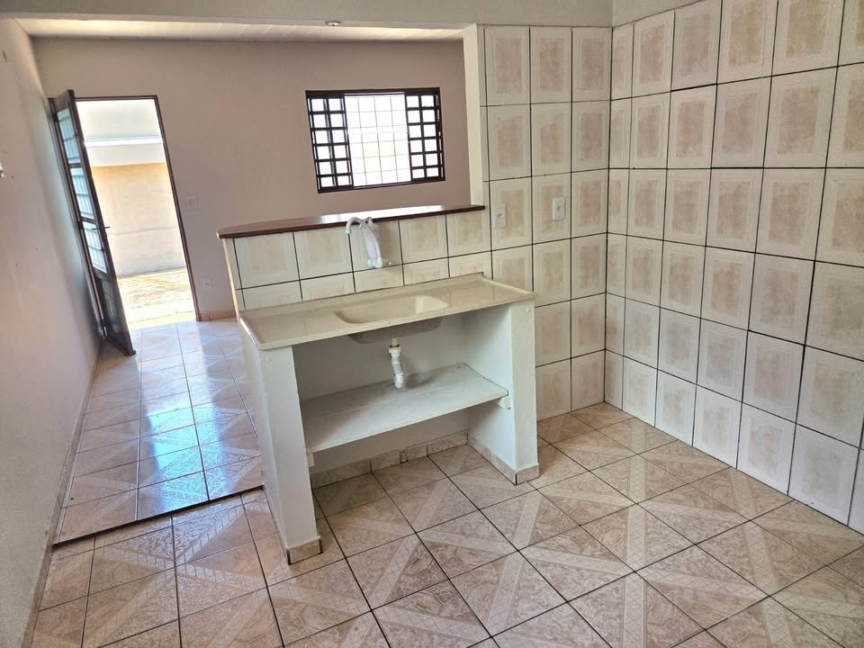
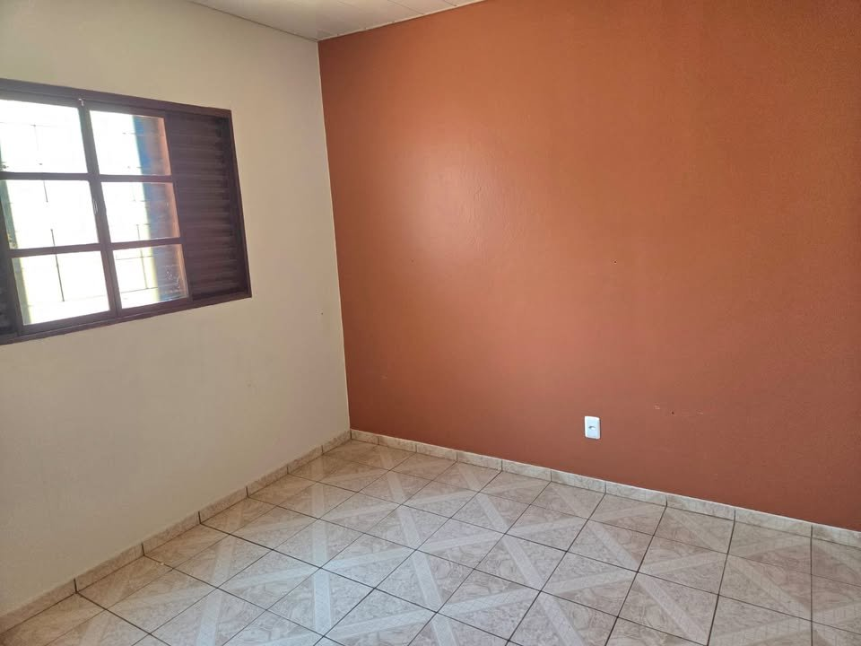
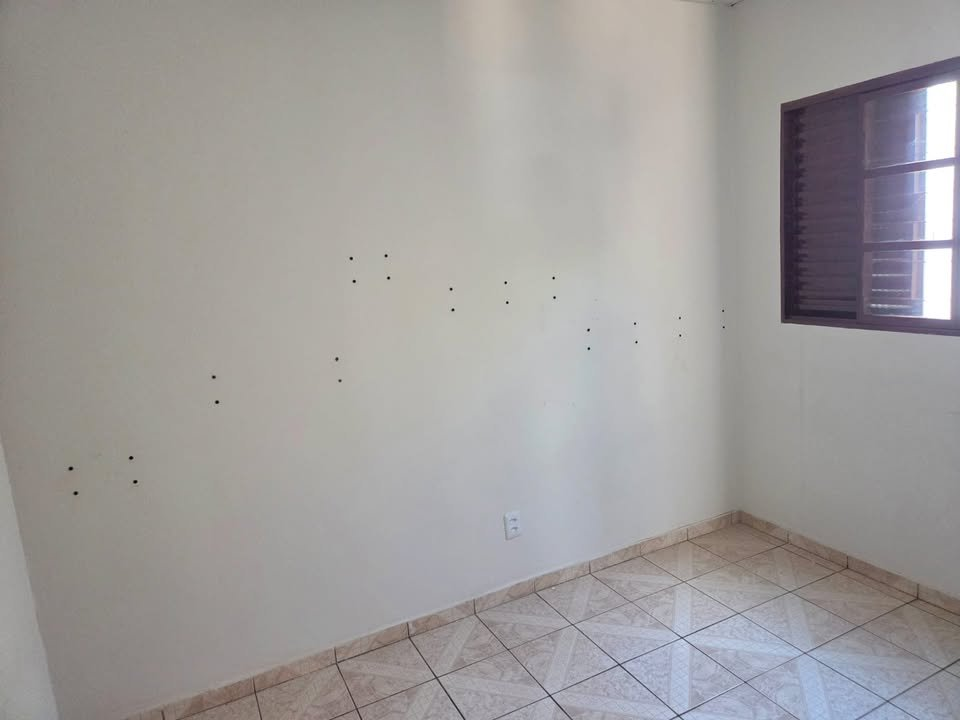
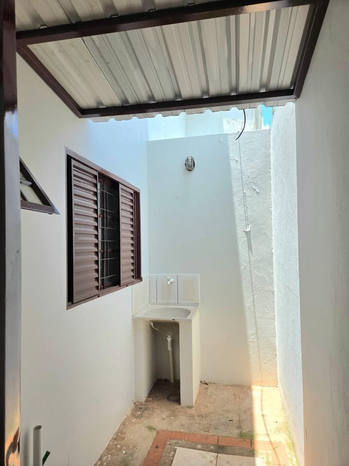
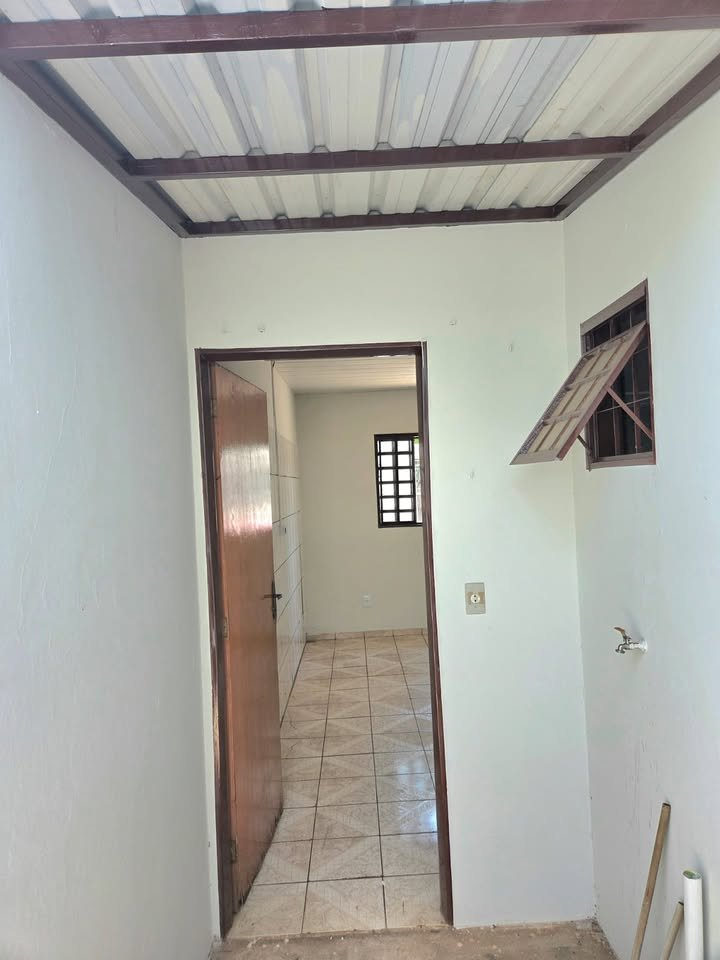

R$ 1.550/mês + IPTU R$ 100/mês — sem taxa de condomínio
Casa térrea em condomínio fechado no Bairro Monte Castelo, em frente ao Edifício Mykonos. Ambiente tranquilo e sem barulho, com 50,51 m² de área construída, 2 quartos, sala, cozinha, banheiro social, área de serviço coberta e 1 vaga de garagem descoberta.
Rua Jaguarão, 866 - Casa 01 — Monte Castelo, Campo Grande/MS.







2 cauções (1º caução na assinatura do contrato e 2º caução parcelável em até 3x junto com o aluguel). O aluguel começa a ser cobrado após 1 mês de moradia.
Felipe Mendes — CRECI-MS 15588-F